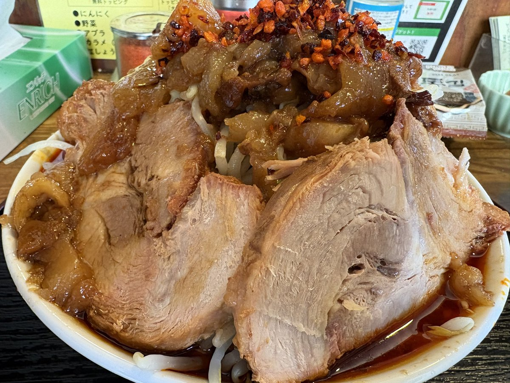
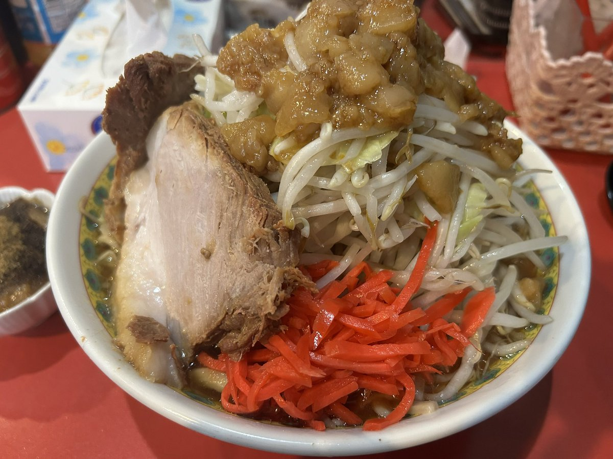
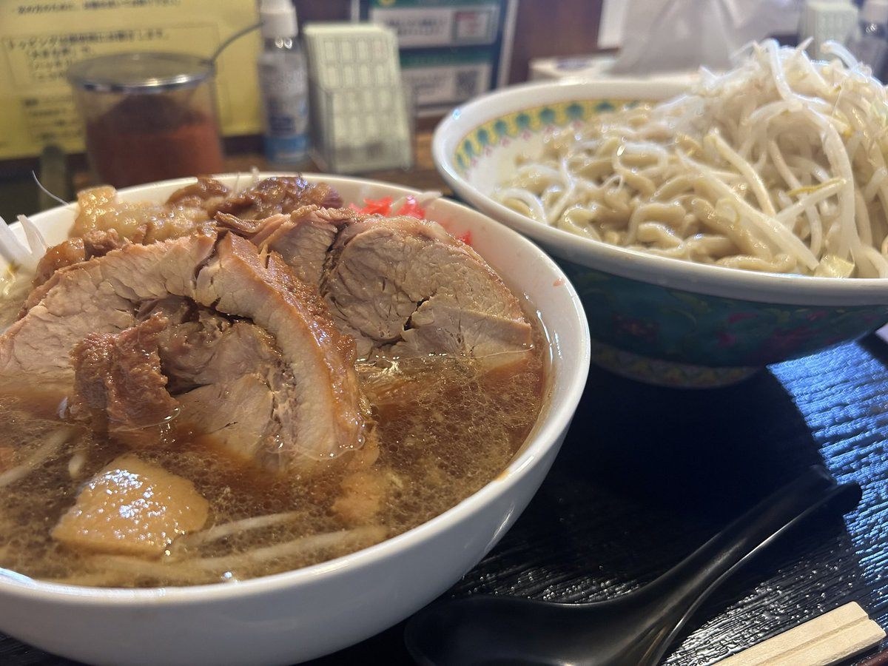
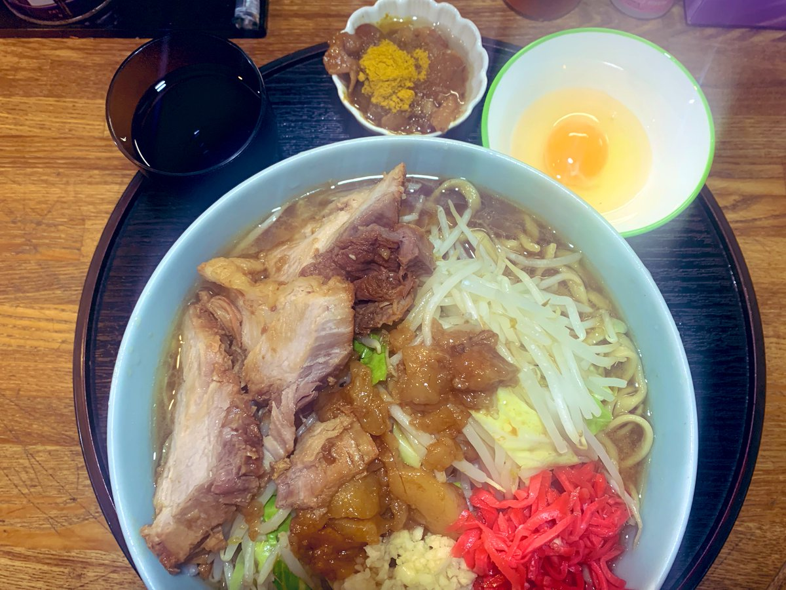

素材・製法・仕上げ。
すべてに妥協なく、一杯を仕上げます。
林SPF・TOKYO X・岩中など、日本が誇るTOPブランドの銘柄豚を使用。脂の甘みと肉の旨みが段違いの、分厚いチャーシューに仕上げています。
豚骨と背脂を長時間炊き上げた濃厚スープ。コクがありながらもくどくない、最後の一滴まで飲み干せる仕上がりです。
ワシワシとした食感の極太麺を自家製で。スープとの絡みを計算し、小麦の風味が感じられる麺に仕上げました。
| 住所 | 〒182-0002 東京都調布市仙川町1-21-24 |
|---|---|
| アクセス | 京王線 仙川駅 徒歩4分 |
| 住所 | 〒211-0004 神奈川県川崎市中原区新丸子東1-825 フレグランス新丸子 1F |
|---|---|
| アクセス | 新丸子駅 徒歩3分 武蔵小杉駅 徒歩9分 |